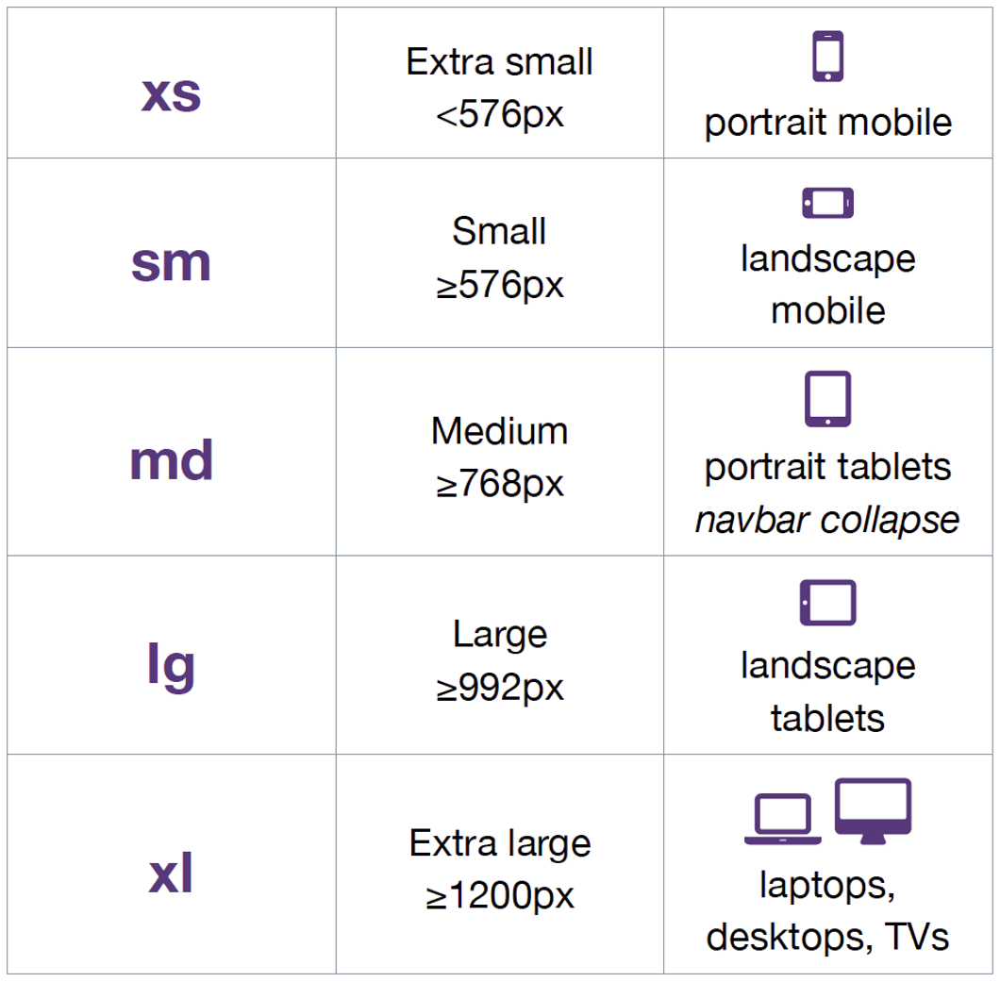

Son reglas CSS específicas que solo aplicarán a ciertos tamaños de pantalla concretos, ¡vamos a ver cómo crearlas!
En primer lugar para que las medias queries te funcionen, debes indicar esta meta en el head de tu HTML
< meta name="viewport" content="width=device-width, initial-scale=1.0">
Esto le dirá al navegador que el ancho de la vista debe ser como máximo el ancho del dispositivo, de esta manera deberíamos evitar tener scroll horizontal en nuestra web
Una vez tengamos el meta indicado podremos crear nuestras primeras media queries:
@media screen and (min-width: 480px) {
/* Código CSS que solo aplica a pantallas con ancho > 480 */
p {
font-size: 25px;
}
}
Podemos hacer combinaciones de reglas:
@media all and (min-width: 800px) and (max-width: 1024px) {
.columna {
width: 33%;
}
}
También podemos usar como selector la orientación de la pantalla, aunque probablemente esto
acabe generando demasiadas variaciones y nos acaba resultando un lío:
@media only screen and (orientation: portrait) {
.titulo {
margin: 10px 20px;
}
}
Como ya hemos mencionando anteriormente debes pensar primero en mobile, esto implica que las
reglas CSS que apliques deberán ser primero para pantallas pequeñas, y en caso de que tengamos
que aplicar alguna media querie, esta debe ser para pantallas grandes
/* Reglas por defecto (mobile) */
p {
font-size: 12px;
/* Resto de reglas en orden creciente */
@media (min-width: 576px) {
p {
font-size: 14px
}
}
@media (min-width: 768px) {
p {
font-size: 16px;
}
}
@media (min-width: 992px) {
p {
font-size: 20px;
}
}
@media (min-width: 1200px) {
p {
font-size: 24px;
}
}
No hay unos breakpoints estándar, en cada proyecto se usan uno, pero si quieres una referencia
puedes usar los mismos que usa Bootstrap en su librería:
